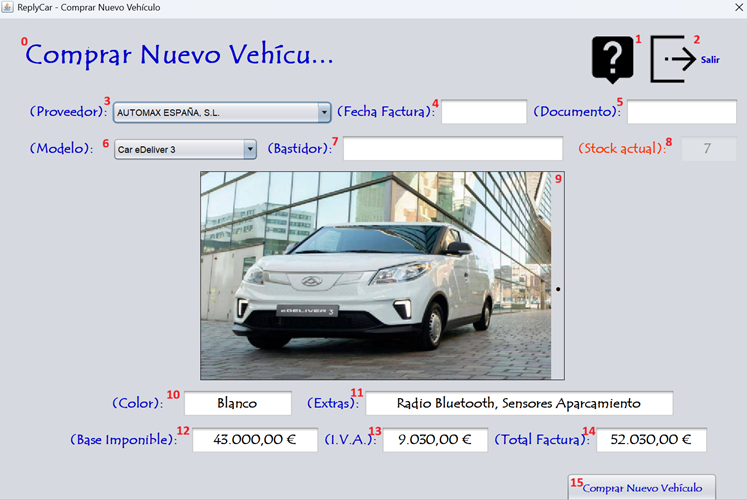

La compra de un vehículo consiste únicamente en la contabilización o registro de la factura del proveedor, en este caso, la marca. Sigue las instrucciones de la fotografía para realizar el proceso correctamente. Para realizar la compra del vehículo debe ingresar los datos que corresponden a la numeración expuesta en la fotografía. Vamos a proceder:

0 - Título de la pantalla, descripción de lo que significa la pantalla.
1 - Botón para proceder a leer la ayuda de la aplicación.
2 - Botón para salir de la aplicación.
3 - Elegimos el proveedor que nos suministra el vehículo.
4 - Fecha de la factura del proveedor que nos suministra el vehículo.
5 - Nº de la factura del proveedor que nos suministra el vehículo.
6 - Elegimos el modelo del vehículo que nos suministran.
7 - Bastidor del vehículo que nos suministran.
8 - Stock actual del modelo elegido para comprar.
9 - Foto del modelo del vehículo que nos suministran.
10 - Color del modelo del vehículo que nos suministran.
11 - Extras del modelo del vehículo que nos suministran.
12 - Base Imponible del vehículo que nos suministran.
13 - I.V.A. del modelo de vehículo que nos suministran.
14 - Total de factura del vehículo que nos suministran.
15 - Comprar, dar de entrada al stock del vehículo facturado por el proveedor.
Nota: Pulsando F1 en la ventana principal, se abrirá esta página de ayuda.